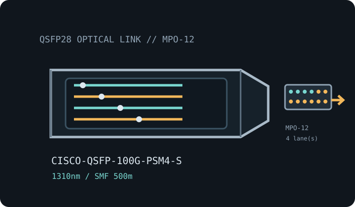

[ MODEL-SPECIFIC OPTICAL NETWORK HARDWARE ]
Cisco QSFP-100G-PSM4-S 100G-PSM4 QSFP28 Transceiver
1310nm parallel single-mode 100GbE QSFP28 optic for links up to 500m. Confirm exact module label and host qualification before installation.

IDENTIFICATION: Match the manufacturer name, exact PID/suffix and revision to the host compatibility listing. Stated line rate and maximum reach are specifications, not measured payload performance.
Model-specific specifications
| Dedicated subcategory | SFP transceivers: optical and copper |
|---|---|
| Exact model / ordering SKU | Cisco QSFP-100G-PSM4-S |
| Form factor and optical type | QSFP28 hot-pluggable four-lane parallel single-mode module; 100G-PSM4 MSA. |
| Ethernet rate and interface | 100G-PSM4 MSA / nominal 100Gb/s aggregate rate across four 25Gb/s lanes. |
| Wavelength | 1310nm nominal (specified transmit/receive band approximately 1295–1325nm). |
| Fiber medium and reach | Single-mode fiber (SMF), up to 500m. |
| Connector | MPO-12 parallel single-mode connector; use correct polarity and mapped fibers. |
| DOM / DDM | DOM supported; host diagnostics and lane status are software/platform dependent. |
| Operating temperature | Commercial operating case temperature: 0°C to 70°C. |
| Host switch/router compatibility | Verify Cisco TMG for the exact PSM4-S PID and host port/release. Match PSM4 at both ends and use qualified parallel SMF cabling; this MPO module is not interchangeable with MPO multimode SR4 solely by connector fit. Check host breakout and fiber polarity. |
| Variant and deployment caveat | PSM4 is parallel single-mode fiber (four lanes), whereas CWDM4/LR4 use duplex LC. Validate MSA interoperability and optical budget at both endpoints. |
| Measured performance | No measured specimen throughput is claimed; link payload depends on both host ports, FEC, coding, protocol overhead, fiber plant and test method. |
Host qualification and installation
Verify Cisco TMG for the exact PSM4-S PID and host port/release. Match PSM4 at both ends and use qualified parallel SMF cabling; this MPO module is not interchangeable with MPO multimode SR4 solely by connector fit. Check host breakout and fiber polarity.
PSM4 is parallel single-mode fiber (four lanes), whereas CWDM4/LR4 use duplex LC. Validate MSA interoperability and optical budget at both endpoints.
Clean and inspect fiber end faces, retain dust caps during storage, follow ESD precautions, and never look into an active optical port. Record the host model, port, software release, transceiver label and available DOM values when documenting a deployed link.
Manufacturer and standards sources
- Cisco 100GBASE QSFP-100G Modules Data SheetCisco’s 100G QSFP datasheet lists PSM4-S and its media/reach; Cisco TMG provides exact host qualification.
- Cisco Transceiver Module Group (TMG) compatibility matrixManufacturer lookup for transceiver PID, supported host platforms and software releases; confirm this exact labeled variant.
- IEEE 802.3 Ethernet standards familyEthernet PHY terminology and link-rate context; MSA-specific optics remain subject to their named module-family specifications.
Source links identify manufacturer documentation and qualification resources. Check the current documentation revision and exact hardware PID before deployment.